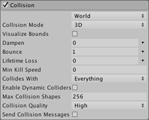
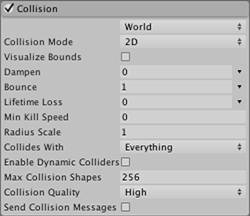

This module controls the way particles collide with solid objects in the scene. Planes, 3D and 2D worlds are all options for particle collisions.
| Property: | Function: |
|---|---|
| Planes popup | Select Planes mode. |
| Planes | An expandable list of Transforms that define collision planes (Planes mode only). |
| Visualization | Selects whether the collision plane gizmos will be shown in the scene view as wireframe grids or solid planes (Planes mode only). |
| Scale Plane | Size of planes used for visualization (Planes mode only). |
| Visualize Bounds | Renders the collision bounds of each particle as a wireframe shape in the scene view |
| Dampen | The fraction of a particle’s speed that it loses after a collision. |
| Bounce | The fraction of a particle’s speed that rebounds from a surface after a collision. |
| Lifetime Loss | The fraction of a particle’s total lifetime that it loses if it collides. |
| Min Kill Speed | Particles travelling below this speed after a collision will be removed from the system. |
| Radius Scale | Allows you to adjust the radius of the particle collision spheres, so it more closely fits the visual edges of the particle graphic. |
| Send Collision Messages | If enabled, particle collisions can be detected from scripts by the OnParticleCollision function. |
| Collision Mode | Pick between 3D or 2D world collisions. |
| Collides With | Particles will only collide with objects on the selected layers (World mode only). |
| Enable Dynamic Colliders | Allows the particles to also collide with dynamic objects. Otherwise only static objects are used. |
| Max Collision Shapes | How many collision shapes can be considered for particle collisions. Excess shapes are ignored. Terrains take priority. |
| Collision Quality | This affects how “watertight” the collisions are - at lower quality levels, particles may sometimes pass through colliders (World mode only). |
 
| Property: | Function: |
|---|---|
| World popup | Select World mode. |
| Collision Mode | 3D or 2D |
| Visualize Bounds | |
| Dampen | The fraction of a particle’s speed that it loses after a collision. |
| Bounce | The fraction of a particle’s speed that rebounds from a surface after a collision. |
| Lifetime Loss | The fraction of a particle’s total lifetime that it loses if it collides. |
| Min Kill Speed | Particles travelling below this speed after a collision will be removed from the system. |
| Radius Scale | Setting for 2D only. |
| Collides With | Particles will only collide with objects on the selected layers (World mode only). |
| Enable Dynamic Colliders | |
| Max Collision Shapes | |
| Collision Quality | This affects how “watertight” the collisions are - at lower quality levels, particles may sometimes pass through colliders (World mode only). |
| Send Collision Messages | If enabled, particle collisions can be detected from scripts by the OnParticleCollision function. |
When other objects surround a particle system, the effect is often more convincing when the particles interact with those objects. For example, water or debris should be obstructed by a solid wall rather than simply passing through it. With Collision enabled, particles can collide with objects in the scene.
A particle system can be set so its particles collide with any collider in the scene by selecting World mode from the popup. (Colliders can also be disabled according to the layer they are on by using the Collides With property.) The popup also has a Planes mode option which allows you to add a set of planes to the scene that don’t need to have colliders. This option is useful for simple floors, walls and similar objects and has a lower processor overhead than World mode. When Planes mode is enabled, a list of transforms (typically empty GameObjects) can be added via the Planes property. The planes extend infinitely in the objects’ local XZ planes with the positive Y axis indicating the planes’ normal vectors. To assist with development, the planes will be shown as gizmos in the scene, regardless of whether or not the objects have any visible mesh themselves. The gizmos can be shown as a wireframe grid or a solid plane, and can also be scaled. However, the scaling only applies to the visualization - the collision planes themselves extend infinitely through the scene.
When collisions are enabled, the size of a particle is sometimes a problem because its graphic can be clipped as it makes contact with a surface. This can result in a particle appearing to “sink” partway into a surface before stopping or bouncing. The Particle Radius property addresses this issue by defining an approximate circular radius for the particles. This size information is used to prevent clipping and avoid the sinking-in effect.
The Dampen and Bounce properties are useful when the particles represent solid objects. For example, gravel will tend to bounce off a hard surface when thrown but a snowball’s particles might lose speed during a collision. Lifetime Loss and Min Kill Speed can help to reduce the effects of residual particles following a collision. For example, a fireball might last for a few seconds while flying through the air but after colliding, the separate fire particles should dissipate quickly.
You can also detect particle collisions from a script if Send Collision Messages is enabled. The script can be attached to the object with the particle system or the one with the collider or both. By detecting collisions, you can use particles as active objects in gameplay, such as projectiles, magic spell and power-ups. See the script reference page for MonoBehaviour.OnParticleCollision for further details and examples.